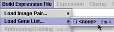

<p><strong>(4) Load Gene List (Control X)</strong></p>
<table width="645" height="88" border="1">
  <tr>
    <td width="364" height="64" valign="top">Load the gene list, also under the Build Expression File menu. This should be a text file with suffix of ".txt" and be in MAGIC Tool format. (See full instructions below.)</td>
    <td width="118"></td>
  </tr>
</table>
<p>&nbsp; </p>
